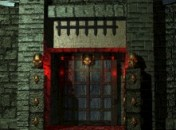
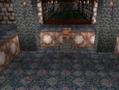
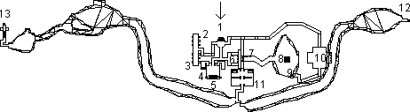

| Goblinwatch | |
| 1 | Entrance |
| 2 | Trapped Chest |
| 3 | Trapped Chest with Goblin Code |
| 4 | Chest |
| 5 | Switch that allows access to 4 |
| 6 | Button Panel to open the doors at 7 NILBOG or GOBLIN spelled backwards is one way to open the doors, there are others. |
| 7 | Multiple Doors |
| 8 | Alter Room, once this is cleared out, you can collect your money from Frank Fairchild in the New Sorpigal Town Hall |
| 9 | Entrance to maintainance tunnels, you do not have to go down here. There is not turning back once you fall. |
| 10 | Four chest's in a room full of guy's, some Goblin Shaman's and Rat's |
| 11 | Some gold on the beds |
| 12 | Treasure Chest |
| 13 | Treasure Chest |
Local Enemies | ||
| Color | HP's | Type |
| Giant Rat | 21 | These guy's are weak, a few arrows should stop them before they get to you. If you are bitten, they can cause disease as well. |
| Large Rat | 13 | |
| Common Rat | 6 | |
| Soul Sucker | 40 | Pretty much all magics work well against these guy's, there is no one that works best. |
| Brain Sucker | 13 | |
| Blood Sucker | 6 | |
| Goblin King | 40 | Pretty much all magics work well against these guy's, there is no one that works best. |
| Goblin Shaman | 21 | |
| Goblin | 13 | |
Leave us a message at: mgrounds@hotmail.com